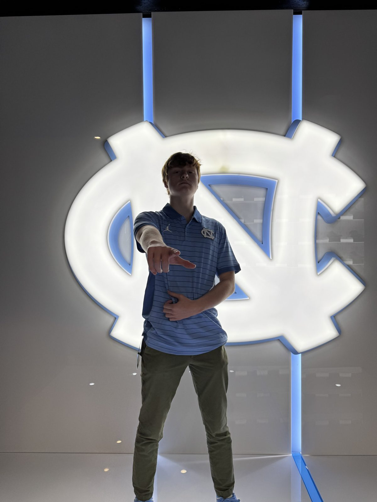
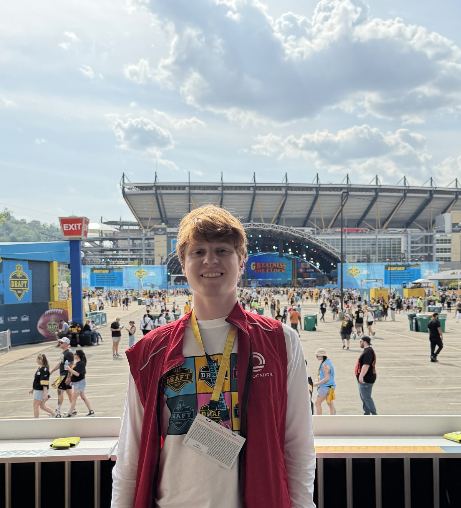

Experience
Where I've Worked
From scouting to live events to the family businesses of a Southampton summer.
2025 — Present
Scouting & Recruiting Intern
UNC Football — Head Coach Bill Belichick’s staff
- Evaluate high school prospects through film study and written scouting reports, weighing both on-field ability and fit within the program’s roster needs
- Evaluated 125+ prospects and interacted with 100+ recruits and families during gamedays and practices

2026 — Present
Vice President, Alpha Chapter
Mu Sigma Lambda — national sports business organization (UNC Alpha Chapter)
- Help lead the Alpha Chapter of Mu Sigma Lambda, a national sports business organization
- Previously a Business Development Intern at the national office — identified student leaders for chapter expansion and built a database of pro sports internship and job openings across the NBA, NFL, MLB, and NHL
Summer 2026
Community Outreach & Business Development Intern
Westchester Soccer Club
- Supported outreach and business development around the club’s potential stadium relocation, building a database of 30+ Westchester County Chambers of Commerce
- Developed original content concepts for the club’s upcoming YouTube channel, pairing community engagement with creative strategy
2026 NFL Draft
NFL Draft Ambassador
On Location — 2026 NFL Draft, Pittsburgh
- Supported guest hospitality and wayfinding while representing On Location’s premium ticketing and experiences
- Worked one of the largest sporting events in the country, gaining firsthand exposure to large-scale events and fan experience

2025 — 2026
Strategy Consultant
AI Consulting at UNC
- Built growth strategies grounded in research and consumer behavior for local organizations
- Designed an acquisition funnel for PORCH and researched donor engagement and food-insecurity trends for Meals on Wheels Orange County
2026 — Present
Club Relations & Membership Chair
Carolina Sport Business Club
- Build relationships and coordinate programming within UNC’s sports business community
- Organized a collaborative event exploring the history and business of soccer
2026 — Present
Secretary
Carolina Sport Administration Club
- Support the organization’s operations and programming
- Engage UNC students interested in the business and administration of sports
2026
Vice President of Marketing
The Creative Business Club at Kenan-Flagler
- Led digital marketing and visual branding for a club connecting creative students with business opportunities
- Created social content and promoted workshops, networking events, and speaker programs
Summer 2025
Food Server
Le Charlot — Southampton, NY
- Served 20–30 covers per shift in a high-volume fine-dining environment, holding a high standard of hospitality and attention to detail
2024 — 2025
Valet Attendant
PeoplePool Valet — the Hamptons
- Provided valet service at private Hamptons events, coordinating vehicle flow with teammates while delivering guest service under time pressure
Summer 2024
Camp Counselor
Southampton Youth Association
- Created a positive environment for campers alongside fellow counselors, leading daily activities and building communication and collaboration skills
2021 — 2023
Senior Sales Associate
Gubbins Running Ahead — Southampton, NY
- Helped 1,000+ customers across three summers and one winter in a specialty running store, building foundational experience in sales, service, and relationship-building
Summer 2022
Clubhouse Attendant
Southampton Golf Club
- Supported daily clubhouse operations and served as a point of contact for 450+ members, helping create a premium experience on and off the course